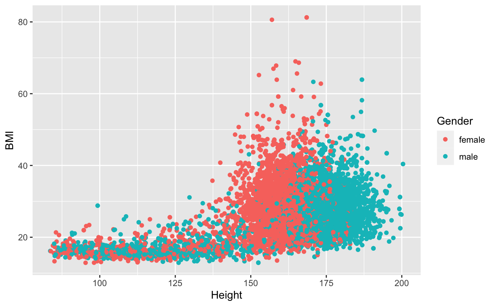
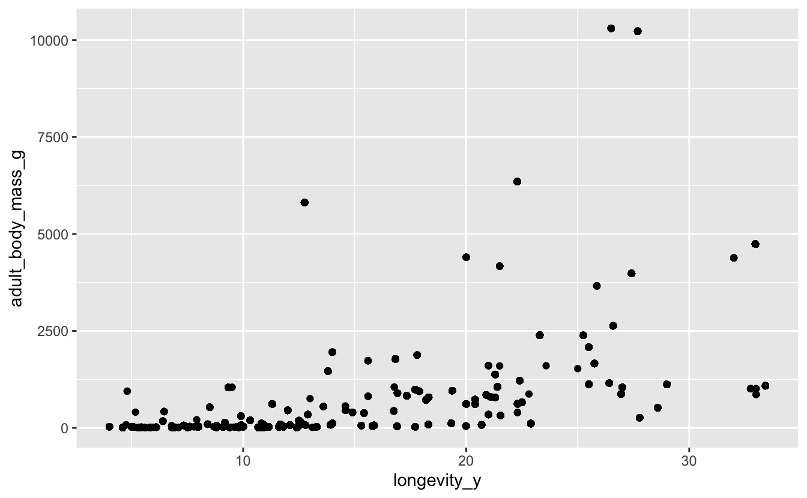
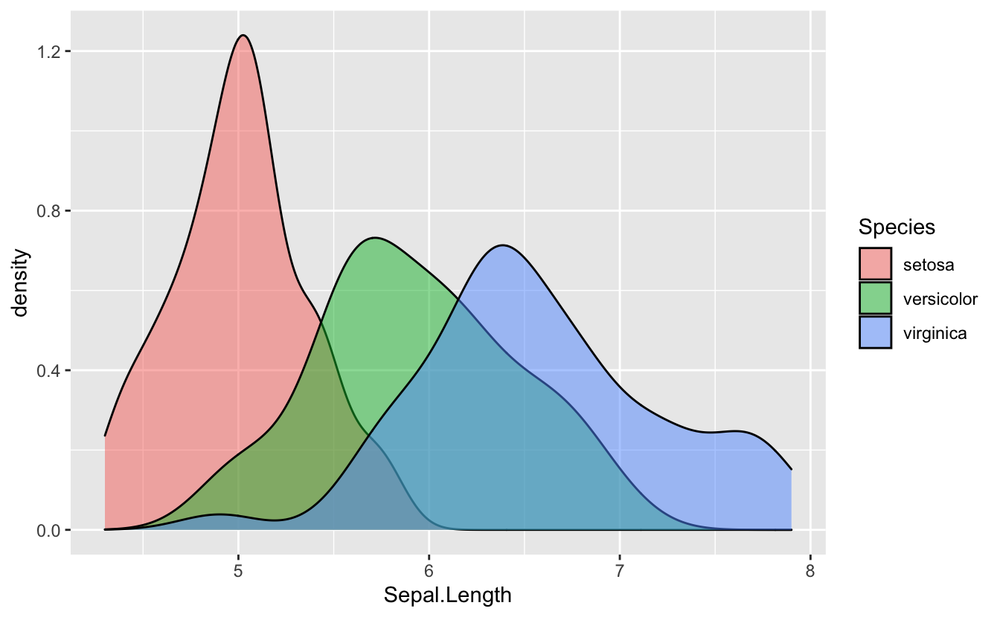

Session 4: Visualizing Data
Introduction to Data Visualization with ggplot2
New To Code Club?
-
First, check out the Code Club Computer Setup instructions, which also has some pointers that might be helpful if you’re new to R or RStudio.
-
Please open RStudio before Code Club to test things out – if you run into issues, join the Zoom call early and we’ll troubleshoot.
Session Goals
- Learn the philosophy of coding a graphic.
- Learn the basic template of a ggplot2 graphic, so you can reuse it for multiple chart types.
- Learn how you can quickly add visual information to a graphic using aesthetics and layers.
Intro: The ggplot2 philosophy
We have already seen that in R, instead of manually manipulating data frames as you might do when editing Excel sheets, we code the operations we want to perform using dplyr verbs like select(), mutate(), inner_join(), and so on.
In a similar way when performing visualization, instead of clicking on a chart type in Excel, we code the chart in R.
And just as dplyr gives us efficient ways to manipulate data frames, ggplot2 (which is also part of the tidyverse) gives us efficient ways to manipulate charts/plots/graphics (we use these terms interchangeably).
The gg in ggplot2 stands for grammar of graphics, a systematic approach for designing statistical plots developed by Leland Wilkinson. The idea behind this was to think about ‘pulling apart’ various plots into their shared component pieces, then provide code that could put them together again. We can then create new plots like we create new sentences (once we understand this grammar).
There are two parts to this. First, the ‘nouns and verbs’ we need to work with plots are very different than those we need to work with data frames. ggplot2 is like a mini-language of its own, with its own verbs and syntax.
Second, this notion of pulling apart a graphic leads to the idea of layers. You can build up a plot of any complexity by overlaying different views of the same data.
There’s a learning curve here for sure, but there are a couple of things that help us.
First, every graphic shares a common template. This is like thinking about the sentence “The cat sat on the mat” grammatically as the template NP V PP (Noun Phrase “The cat”, Verb “sat”, Prepositional Phrase “on the mat”). Once you understand this structure you can “say” a lot of different things.
(And I mean a lot. The ggplot cheat sheet lists over 40 plot-types, but because this is a language, users can create their own extensions that you can also utilize, adding over 80 more.)
Second, the way we put layers together is identical to the way we use pipes. You can read %>% as “and then”: select() and then mutate() and then summarize(). In graphics, we can say “show this layer, and then overlay this layer, and then overlay this layer”, etc., using a very similar syntax.
Examples
So how does this work in practice? We’ll work through visualizing the iris dataset that you’ve seen before. This is an extremely famous dataset that was first analyzed by R. A. Fisher in 1936: The use of multiple measurements in taxonomic problems. He was attempting to use petal and sepal measurements to discriminate one species from another.
ggplot2 is part of the tidyverse package so we need to load that first:
# this assumes you've already installed tidyverse
library(tidyverse)
#> ── Attaching packages ─────────────────────────────────────── tidyverse 1.3.0 ──
#> ✔ ggplot2 3.3.2 ✔ purrr 0.3.4
#> ✔ tibble 3.0.4 ✔ dplyr 0.8.5
#> ✔ tidyr 1.0.3 ✔ stringr 1.4.0
#> ✔ readr 1.3.1 ✔ forcats 0.5.0
#> ── Conflicts ────────────────────────────────────────── tidyverse_conflicts() ──
#> ✖ dplyr::filter() masks stats::filter()
#> ✖ dplyr::lag() masks stats::lag()
And recall that the iris dataset (3 species, 50 observations per species) is automatically available to us:
head(iris)
#> Sepal.Length Sepal.Width Petal.Length Petal.Width Species
#> 1 5.1 3.5 1.4 0.2 setosa
#> 2 4.9 3.0 1.4 0.2 setosa
#> 3 4.7 3.2 1.3 0.2 setosa
#> 4 4.6 3.1 1.5 0.2 setosa
#> 5 5.0 3.6 1.4 0.2 setosa
#> 6 5.4 3.9 1.7 0.4 setosa
What is the correlation between petal length and width in these species? Are longer petals also wider? We can visualize this with a scatterplot. But first let’s look a the ggplot template. (Note the package is ggplot2, the command is ggplot.)
ggplot(data = <DATA>) +
<GEOM_FUNCTION>(mapping = aes(<MAPPINGS>))
These are the obligatory parts of any plot. The first argument to ggplot() is the data frame:
ggplot(data = iris)

This is not very interesting! but it’s notable that it is something. ggplot() has created a base coordinate system (a base layer) that we can add visual layers to. The add a layer operator is “+”, which is the ggplot equivalent of the pipe symbol, and it must occur at the end of the line.
The next argument specifies the kind plot we want: scatterplot, bar chart, fitted line, boxplot, pie chart, etc. ggplot2 refers to these as geoms: the geometrical object that a plot uses to represent data. You can see an overview of many of these geoms in the cheat sheet. The geom for a scatterplot is geom_point().
But we also require a mapping argument, which maps the variables in the dataset we want to focus on to their visual representation in the plot.
And finally we need to specify an aesthetic for the geometric objects in the plot, which will control things like shape, color, transparency, etc. Perhaps surprisingly, for a scatterplot, the x and y coordinates are aesthetics, since these control, not the shape or color, but the relative position of the points in the coordinate system.
Here is our complete plot:
ggplot(data = iris) +
geom_point(mapping = aes(x = Petal.Length, y = Petal.Width))

There is clearly a positive correlation between length and width. And we can make this even more apparent by visually fitting a line to the data, by overlaying another geom in the same plot.
ggplot(data = iris) +
geom_point(mapping = aes(x = Petal.Length, y = Petal.Width)) +
geom_smooth(mapping = aes(x = Petal.Length, y = Petal.Width))
#> `geom_smooth()` using method = 'loess' and formula 'y ~ x'

There is clearly some code redundancy here, and we really don’t want the x, y mapping of these two layers to be independent. We can extract the common mapping information and move it to the top level:
ggplot(data = iris, (mapping = aes(x = Petal.Length, y = Petal.Width))) +
geom_point() +
geom_smooth()
#> `geom_smooth()` using method = 'loess' and formula 'y ~ x'

So we have the possibility of local layer specifications, and global specifications. Global specifications are inherited by all the local layers.
The power of aesthetics
The aim of Fisher’s paper was to try to discriminate different species based on their morphological measurements. It looks from this plot that there are two distinct clusters. Do these clusters correspond to different species? There are two clusters, but three species. How can we explore this further?
Our current plot uses two numeric variables: Petal.Length and Petal.width. We can add a third categorical variable, like Species, to a two dimensional scatterplot by mapping it to a different visual aesthetic. We’ve mapped length and width to x,y coordinates. Now we’ll simultaneously map species to color by expanding our list of aesthetics:
ggplot(data = iris) +
(mapping = aes(x = Petal.Length, y = Petal.Width, color = Species)) +
geom_point()

The R help for a specific geoms will list, among other things, all the aesthetics that geom supports.
Breakout Rooms
In the exercises we’ll be looking a little more at the iris data, and in addition, the NHANES data we used last week, and the left-joined bird dataset we built last week in Excercise 7.
If you haven’t installed the NHANES dataset do:
install.packages("NHANES", repos = "http://cran.us.r-project.org")
#>
#> The downloaded binary packages are in
#> /var/folders/d4/h4yjqs1560zbsgvrrwbmbp5r0000gn/T//RtmpPvm8W9/downloaded_packages
Once installed, load it with:
library(NHANES)
A prebuilt joined data set has been loaded on github.
# create a data directory for the new file if you haven't done so yet:
dir.create('data/birds', recursive = TRUE)
#> Warning in dir.create("data/birds", recursive = TRUE): 'data/birds' already exists
# set the url
joined_data_url <- 'https://raw.githubusercontent.com/biodash/biodash.github.io/master/content/codeclub/04_ggplot2/joined_data.tsv'
# set the path for the downloaded file
joined_file <- 'data/birds/joined_data.tsv'
#download to file
download.file(url = joined_data_url, destfile = joined_file)
# read file
joined_data <- read_tsv(joined_file)
#> Parsed with column specification:
#> cols(
#> species = col_character(),
#> locality = col_character(),
#> stateProvince = col_character(),
#> eventDate = col_datetime(format = ""),
#> species_en = col_character(),
#> adult_body_mass_g = col_double(),
#> adult_svl_cm = col_double(),
#> longevity_y = col_double(),
#> litter_or_clutch_size_n = col_double()
#> )
Exercise 1
Revisit the iris data set, and plot sepal width (y) against sepal length (x) colored by species. Which morphological character, petals or sepals, provides the greatest discrimination between species?
Hints (click here)
Simply reuse the code we used for petals. You can often leverage code from an old plot for a new one.
Solution (click here)
ggplot(data = iris) +
(mapping = aes(x = Sepal.Length, y = Sepal.Width, color = Species)) +
geom_point()

Note this solution shows yet another way to position global mapping information: as its own layer. This can help readability and avoid too many nested parentheses.
Exercise 2
Use the NHANES data set to plot body mass index (y) against height (x). Color by gender. Which gender has the highest BMI?
Hints (click here)
glimpse() the dataset to identify the variable names. Solution (click here)
ggplot(data = NHANES) +
geom_point(mapping = (aes(x = Height, y = BMI, color = Gender)))
#> Warning: Removed 366 rows containing missing values (geom_point).

Exercise 3
Use the same plot but now color by physical activity. How active are those people with the highest BMI?
Hints (click here)
Again,
glimpse() the dataset to identify the variable names. Solution (click here)
ggplot(data = NHANES) +
geom_point(mapping = (aes(x = Height, y = BMI, color = PhysActive)))
#> Warning: Removed 366 rows containing missing values (geom_point).

Exercise 4
Often plotting the data allows us to identify outliers, which may be data-entry errors, or genuinely extreme data. Using the joined_data set, plot adult body mass (y) against longevity (x). Identify extreme data points at the high end of body mass. How can we identify what these points represent?
Hints (click here)
Examine the plot to find an appropriate threshold value, and filter the data using that value. How many data points are there passing that threshold? What species are represented by these data points? How many weights are reported? Why is the plot misleading here?
Solution (click here)
ggplot(data = joined_data) +
geom_point(mapping = (aes(x = longevity_y, y = adult_body_mass_g)))
#> Warning: Removed 24089 rows containing missing values (geom_point).

joined_data %>%
filter(adult_body_mass_g > 10000)
#> # A tibble: 228 x 9
#> species locality stateProvince eventDate species_en
#> <chr> <chr> <chr> <dttm> <chr>
#> 1 Cygnus… Findlay Ohio 2008-02-17 00:00:00 Mute Swan
#> 2 Cygnus… Dundee Ohio 2004-02-16 00:00:00 Mute Swan
#> 3 Cygnus… 44805 A… Ohio 2006-02-18 00:00:00 Mute Swan
#> 4 Cygnus… 45011 H… Ohio 2005-02-19 00:00:00 Mute Swan
#> 5 Cygnus… 45042 M… Ohio 2009-02-13 00:00:00 Trumpeter…
#> 6 Cygnus… 44813 B… Ohio 2007-02-19 00:00:00 Mute Swan
#> 7 Cygnus… Spencer Ohio 2008-02-16 00:00:00 Mute Swan
#> 8 Cygnus… 44903 M… Ohio 2009-02-16 00:00:00 Mute Swan
#> 9 Cygnus… 44601 A… Ohio 2002-02-16 00:00:00 Mute Swan
#> 10 Cygnus… Avon La… Ohio 2007-02-17 00:00:00 Mute Swan
#> # … with 218 more rows, and 4 more variables: adult_body_mass_g <dbl>,
#> # adult_svl_cm <dbl>, longevity_y <dbl>, litter_or_clutch_size_n <dbl>
joined_data %>%
filter(adult_body_mass_g > 10000) %>%
select(species) %>%
distinct()
#> # A tibble: 2 x 1
#> species
#> <chr>
#> 1 Cygnus olor
#> 2 Cygnus buccinator
joined_data %>%
filter(adult_body_mass_g > 10000) %>%
select(adult_body_mass_g) %>%
distinct()
#> # A tibble: 2 x 1
#> adult_body_mass_g
#> <dbl>
#> 1 10230
#> 2 10300
Bonus, a new geom!
Revisit the iris data and generate a density histogram for sepal length, categorized by species.
Hints (click here)
Use
geom_density(). Check the help to see what aesthetics it supports. Note that while you 'color' a point, you 'fill' an area. Solution (click here)
ggplot(data = iris) +
(mapping = (aes(x = Sepal.Length, fill = Species))) +
geom_density(alpha = 0.5)

Note, what does the alpha aesthetic control?